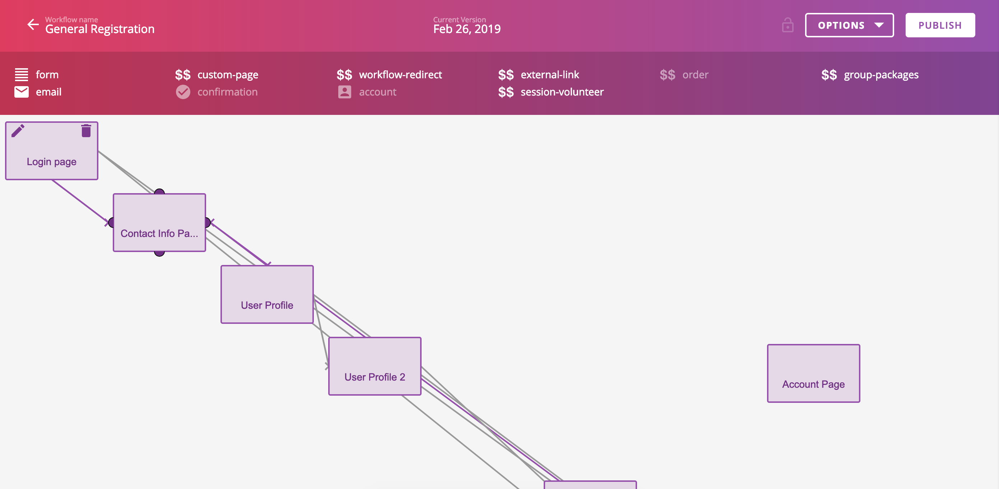
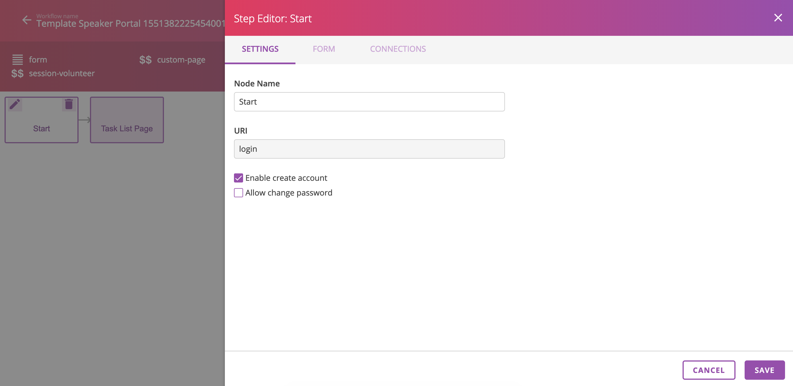
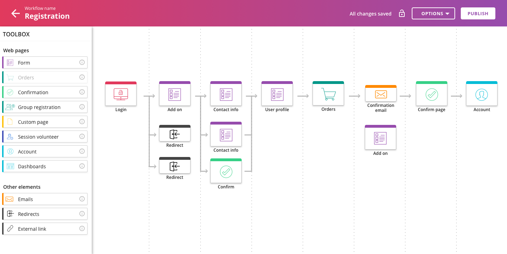

The long version
In August of 2018, I started on a new Scrum team at Rainfocus. I was coming from a team that was less UX heavy and told that I would have a new project to work on called Workflow Builder. I realized very early on that the only way I was going to have success in this project was to work with my team. So I dove in with my PM Jack to figure out the best way to tackle this beast. We decided to approach this iteratively in what we called phases. Each phase would be a chunk of code our devs could work on that would provide real impact to our end user.
Do you know what the image below you is? Do you know which things you can click on or interact with? Do you know what it represents? We could not answer these questions as first time users. However, we quickly realized there were bigger problems.

Users had to know JSON, a programming language, to be able to use Workflow Builder. Not just to do advanced features but to do their job. Everything had to be configured with JSON. This presented three huge problems for the business.
First, it takes a long time to teach someone to use JSON. Most internal users didn’t feel comfortable until around six months of use.
Second, no external users were using Workflow Builder. This meant up to a full week of work for our services team that they could have been spent elsewhere.
Third, available tools were not clearly visible so things were being recreated and hacked all of the time.
To address these issues, I went straight for my team. Jack and I spent hours and hours sifting through the JSON to find every possible configuration. We set up dozens of interviews with our services team to find out how they are using the tool. Devs ran queries. Other designers generously chipped in to help. We literally talked with everyone.

What we found was very interesting. Each card in Worflow Builder represents something that an end user does while registering for an event. Our users needed a place where they could edit basic information in drop-downs and text fields, add relevant content to the page and connect steps to one another. So we created Step Editor, which was named by Jack. Step Editor is a panel that slides onto a screen to enable users to edit steps just like they would in the JSON.
Once we had a design for a template, we had to go back and redesign 31 steps so that they too would work in this new UI.
Let’s go back to this first picture, shown again below. Do you know what this is communicating? What do the lines mean? What are they telling you now?
To be honest, after asking over 15 people those same questions, I never got a good answer. No one knew what the lines meant. Lines are intended to show the flow users will take to accomplish a task. However, the lines go on top of each other and turn into what one user called “spaghetti”.
Our goal was to fix how Workflow Builder looked. In addition to the spaghetti lines, we found that users hated:
- Actions. I do not have time to write about actions right now because that is going to be its whole own project.
- The icons for steps. They made no sense. (Can you see the dollar signs in the image?)
To fix these problems, I once again went to my team. We had workshops with designers and devs, interviewed more people, and talked a lot. What we found was very cool. In Workflow Builder there are certain types of lines that were ruining the experience. Lines that show what attendees generally do are helpful. However, there are also lines representing actions that one out of 10,000 people take. Those are shown with equal importance on the page. Our users couldn’t tell us this but we observed it while watching them work. They would make lines, or connections, do different steps and those lines would make their lives miserable.
What we decided to do was hide lines that are not 100% necessary to users. We did this by placing the steps in a vertical grid. Much like Trello, you can add steps below but not above the top step. Your steps can stretch on for miles if you want them to. But, we will only show you lines that go from one column to the next. If you hover over a step, you can see all of the connections that go out of it.

When we tested this with users, people were nervous. They thought they wanted to see all the lines at once. However, based on what we realized lines did, we took a gamble. We decided that if we made a button to toggle on lines, it would be the last thing we made. We truly believe that is not necessary and that users will find that our design solves that problem well.
More than anything these projects have taught me the importance of a team. The team at Rainfocus is the reason these designs look and function great! It blows my mind that my dev team is able to create this. I feel honored to have played a role in this team and to make something that I am confident will make hundreds of people’s jobs easier.